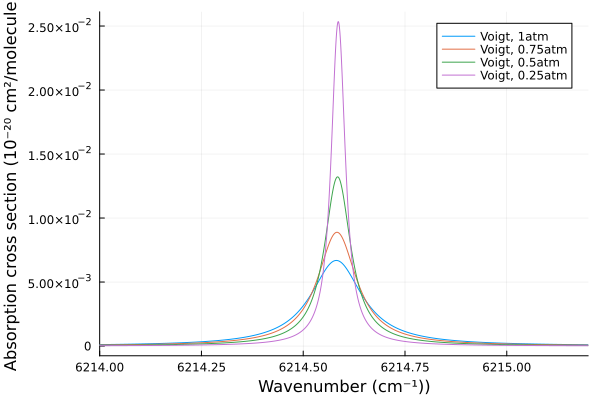
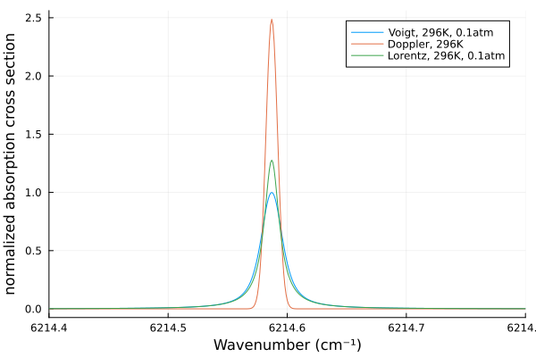
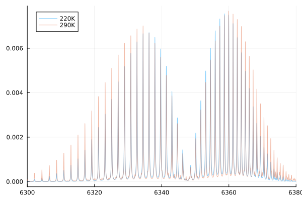
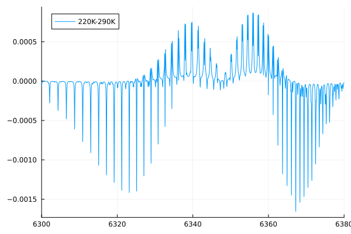
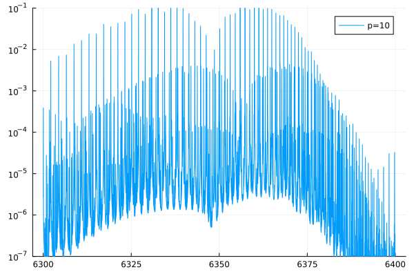
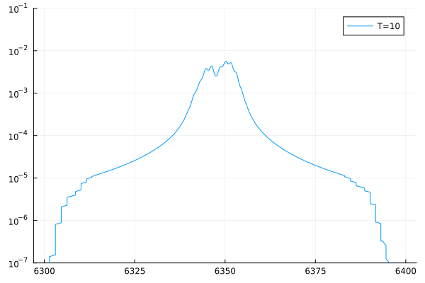
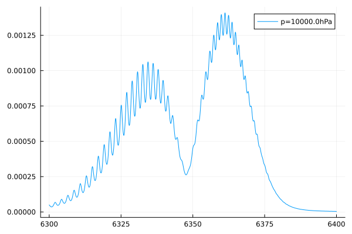

Absorption: Spectral Line Shapes
The purpose of this tutorial is to demonstrate how to compute line-shapes using the vSmartMOM Julia package. Here, we focus on rotational-vibrational transition lines, what processes determine line-shapes, and how the line-shapes depend on pressure and temperature.
Basic Tools
We are making use of the HITRAN database, see a list of tutorials here.
There are other spectroscopic linelists, but we are focusing on HITRAN only here. In addition, there are more complex line-shapes that we are not treating here, including collisional narrowing and line-mixing, collision-induced absorption (CIA). In the future, these might be added to vSmartMOM.
Line-shape:
If we have a line-strength S (in cm$^{-1}$ cm$^2$/molecule) for a specific transition at $\nu_0$, we can compute the cross section as:
\[\sigma(\nu) = S \cdot \Phi(\nu-\nu_0)\,,\]
where $\Phi(\nu-\nu_0)$ denotes the line-shape function (in 1/cm$^{-1}$), which is normalized to 1:
\[\int_{-\infty}^\infty \Phi(\nu-\nu_0) d\nu=1\]
There are several processes that affect the shape and width of $\Phi$, and we will walk through the most important ones here.
Doppler Broadening
Doppler broadening is caused by a simple doppler shift of emitted and absorbed frequencies, caused by the relative velocities of the molecules along the line of sight. A doppler shifted apparent frequency from the centroid frequency $\nu_0$ can be described as:
\[\nu = \nu_0\left(1+\frac{v_r}{c}\right)\,\]
where $v_r$ is the relative velocity of the absorbing photon along the line of sight. The doppler shift is then simply
\[\Delta\nu = \nu_0\frac{v_r}{c}\]
Let us take a simple example with the satellite flying at 7km/s and either staring into the flight direction (technically, it wouldn't see the atmosphere then, but let's ignore this) or looking into the back:
____
# Speed of light (in m/s)
c = 299792458.0
# Relative velocity (in m/s)
vᵣ = 7000.0
# Center wavenumber (say 1600nm, which is 1e7/1600=6250 cm$^{-1}$)
v₀ = 6250.0
# Doppler shift:
Δ_ν = ( v₀ * vᵣ) / c
# Just writing out doppler shift in wavenumbers and wavelengths
println("Doppler shift = $Δ_ν cm-1")
println("Doppler shift = $(1e7/(v₀-Δ_ν)-1e7/v₀) nm")Doppler shift = 0.14593429164919153 cm-1
Doppler shift = 0.03736005100040529 nmRandom movements of molecules in gases lead to doppler broadening effects
In the one-dimensional case – say along the x-axis –, the speed of molecules is distributed according to the Maxwell-Boltzmann distribution:
\[f(v_x) = \sqrt{\frac{m}{2\pi kT}}\exp{\left(-\frac{mv_x^2}{2kT}\right)}\,,\]
where $m$ is the particle mass, $k$ is the Boltzmann constant, and T is thermodynamic temperature.
We can thus define a Doppler width $\Delta \nu_D$ as
\[\Delta \nu_D = \frac{\nu_0}{c}\sqrt{\frac{2kT}{m}}= \frac{\nu_0}{c}\sqrt{\frac{2RT}{M}}\,\]
which yields the following line-shape:
\[\phi_D(\nu) = \frac{1}{\Delta \nu_D \sqrt{\pi}}\exp{\left(-\frac{(\nu-\nu_0)^2}{\Delta \nu^2_D}\right)}\,,\]
which is a Gaussian distribution with $\Delta \nu_D$ representing the standard deviation.
Let us put in some numbers with R=8.3144598 J/K/mol at 6000cm$^{-1}$:
T = 220K, 290K
M = 16g/mol (CH$4$) or 44g/mol (CO$_2$)
\[\Delta \nu_D(290K,CO_2)=0.0066cm^{-1}\]
\[\Delta \nu_D(220K,CO_2)=0.0058cm^{-1}\]
\[\Delta \nu_D(290K,CH_4)=0.0110cm^{-1}\]
\[\Delta \nu_D(290K,CH_4)=0.0096cm^{-1}\]
Multitply with about 1.6585 (2$\sqrt{ln(2)}$) to get the full-width half-maximum (FWHM) of the spectral line.
Natural broadening
The Heisenberg uncertainty principle tells us that there is an uncertainty in the Energy:
\[\Delta E \Delta t \sim h/2\pi\,,\]
As $\Delta E$ is $h\Delta\nu$, we can write:
\[\Delta\nu = \frac{h/2\pi}{\tau}\]
The natural line-width is defined by using the resulting radiative lifetime, but this is mostly negligible as the natural lifetime of the upper state is usually much much smaller than the "perturbed" lifetime in the presence of quencher (e.g. through collisions or doppler broadening). Again, there are exceptions.
Collisional broadening
Collisions between molecules quench the excited state and thus reduce the lifetime of the upper state, resulting in a widening of the line width. This behavor gives rise to the so-called Lorentz lineshape.
\[\phi_L(\nu) = \frac{\alpha_L}{\pi \left[(\nu-\nu_0)^2+\alpha_L^2\right]}\]
$\alpha_L$ depends linearly on the number density of the perturbing molecules and the relative speed of the collision partners (thus scales linearly with pressure and with $\sqrt{T}$, basically both density and velocity affect the number of collisions per time). We often call this type of broadening pressure broadening, caused by collisions between molecules or atoms, which can supply or remove small amounts of energy during radiative transitions, thereby allowing photons with a broader range of frequencies to produce a particular transition of a molecule.
Voigt lineshape
The Voigt line-shape is the combination of Doppler and Lorentz broadening (convolution of the two) but cannot be evaluated analytically. However, there are numerical routines to compute it efficiently, multiple of which are implemented in vSmartMOM.
Other more complex lineshapes
Once you dig deeper, there are various other more complex line-shapes (and line-mixing effects), which we ignore for now as the Voigt line-shape can provide very reasonable results. See, for instance, here.
Import the required tools:
using Plots
using Pkg.Artifacts
using vSmartMOM
using vSmartMOM.AbsorptionRead the HITRAN database for CO$_2$, using artifacts in Julia:
co2_par = Absorption.read_hitran(artifact("CO2"), mol=2, iso=1, ν_min=6214.4, ν_max=6214.8);Create a Voigt model (all in CPU mode)
line_voigt = make_hitran_model(co2_par, Voigt(), architecture=CPU())HitranModel(HitranTable{Float64}([2, 2, 2, 2, 2], [1, 1, 1, 1, 1], [6214.587643, 6214.695841, 6214.749323, 6214.787831, 6214.790199], [1.607e-23, 2.306e-29, 5.748e-28, 1.315e-29, 1.291e-29], [0.007345, 7.824e-6, 7.523e-6, 0.0001482, 0.02366], [0.0762, 0.0718, 0.0833, 0.0621, 0.0628], [0.103, 0.098, 0.111, 0.065, 0.066], [106.1297, 1533.2797, 695.5495, 2523.0217, 3565.1743], [0.7, 0.72, 0.72, 0.66, 0.67], [-0.00629, -0.006395, -0.00476, -0.008924, -0.008838], [" 3 0 0 13", " 4 3 3 02", " 4 2 2 02", " 2 2 2 12", " 4 0 0 14"], [" 0 0 0 01", " 0 2 2 01", " 0 1 1 01", " 0 0 0 01", " 1 0 0 02"], [" ", " ", " ", " ", " "], [" P 16e ", " P 22e ", " R 8f ", " P 80e ", " R 76e "], ["478886", "367764", "367784", "367764", "367764"], ["2029 7 6 6 9", "2029 5 4 5 7", "2029 5 4 5 7", "2029 5 4 5 7", "2029 5 4 5 7"], [" ", " ", " ", " ", " "], [31.0, 43.0, 19.0, 159.0, 155.0], [33.0, 45.0, 17.0, 161.0, 153.0]), Voigt(), 40, 0, HumlicekWeidemann32SDErrorFunction(), CPU())Create a Doppler model
line_doppler = make_hitran_model(co2_par, Doppler(), architecture=CPU())HitranModel(HitranTable{Float64}([2, 2, 2, 2, 2], [1, 1, 1, 1, 1], [6214.587643, 6214.695841, 6214.749323, 6214.787831, 6214.790199], [1.607e-23, 2.306e-29, 5.748e-28, 1.315e-29, 1.291e-29], [0.007345, 7.824e-6, 7.523e-6, 0.0001482, 0.02366], [0.0762, 0.0718, 0.0833, 0.0621, 0.0628], [0.103, 0.098, 0.111, 0.065, 0.066], [106.1297, 1533.2797, 695.5495, 2523.0217, 3565.1743], [0.7, 0.72, 0.72, 0.66, 0.67], [-0.00629, -0.006395, -0.00476, -0.008924, -0.008838], [" 3 0 0 13", " 4 3 3 02", " 4 2 2 02", " 2 2 2 12", " 4 0 0 14"], [" 0 0 0 01", " 0 2 2 01", " 0 1 1 01", " 0 0 0 01", " 1 0 0 02"], [" ", " ", " ", " ", " "], [" P 16e ", " P 22e ", " R 8f ", " P 80e ", " R 76e "], ["478886", "367764", "367784", "367764", "367764"], ["2029 7 6 6 9", "2029 5 4 5 7", "2029 5 4 5 7", "2029 5 4 5 7", "2029 5 4 5 7"], [" ", " ", " ", " ", " "], [31.0, 43.0, 19.0, 159.0, 155.0], [33.0, 45.0, 17.0, 161.0, 153.0]), Doppler(), 40, 0, HumlicekWeidemann32SDErrorFunction(), CPU())Create a Lorentz model
line_lorentz = make_hitran_model(co2_par, Lorentz(), architecture=CPU())
# Specify our wavenumber grid
ν = 6210:0.001:6220;Here we compute the cross sections at different pressures (in hPa, 3rd argument) and temperatures (in K, 4th argument)
cs_co2_1atm = absorption_cross_section(line_voigt, ν, 1013.0 , 296.0);
cs_co2_075atm = absorption_cross_section(line_voigt, ν, 0.75*1013.0, 296.0);
cs_co2_05atm = absorption_cross_section(line_voigt, ν, 0.5*1013.0 , 296.0);
cs_co2_025atm = absorption_cross_section(line_voigt, ν, 0.25*1013.0, 296.0);
cs_co2_01atm = absorption_cross_section(line_voigt, ν, 0.1*1013.0 , 296.0);Get some more line-shapes just for Doppler and Voigt to better compare the different line shapes
cs_co2_01atm = absorption_cross_section(line_voigt, ν, 0.1*1013.0 , 296.0);
cs_co2_doppler = absorption_cross_section(line_doppler, ν, 0.1*1013.0 , 296.0);
cs_co2_lorentz = absorption_cross_section(line_lorentz, ν, 0.1*1013.0 , 296.0);Using a scaling factor as Julia plots sometimes have issues with very small numbers!
ff = 1e20;
plot(ν, ff*cs_co2_1atm, label="Voigt, 1atm", yformatter = :scientific)
plot!(ν, ff*cs_co2_075atm, label="Voigt, 0.75atm")
plot!(ν, ff*cs_co2_05atm, label="Voigt, 0.5atm")
plot!(ν, ff*cs_co2_025atm, label="Voigt, 0.25atm")
xlims!((6214,6215.2))
xlabel!("Wavenumber (cm⁻¹))")
ylabel!("Absorption cross section (10⁻²⁰ cm²/molecule)")
From these figures we can see how strongly the line-witdth is impacted by pressure broadening at ranges from about 250hPa to 1013hPa. Especially the line wings are substantially widened, which is typical of Lorentz line-shapes.
plot( ν, cs_co2_01atm /maximum(cs_co2_01atm) ,label="Voigt, 296K, 0.1atm")
plot!(ν, cs_co2_doppler /maximum(cs_co2_01atm) ,label="Doppler, 296K")
plot!(ν, cs_co2_lorentz /maximum(cs_co2_01atm) ,label="Lorentz, 296K, 0.1atm")
xlims!((6214.4,6214.8))
ylabel!("σ/max(σ)")
xlabel!("Wavenumber (cm⁻¹)")
ylabel!("normalized absorption cross section")
We can see the individual impacts of Doppler and Pressure broadening at about 100hPa, at which Doppler broadening becomes important too. Most of the shape of the wings is still dominated by pressure broadening but the center has substantial contributions from Doppler broadening as well. The Voigt shape shown here is the convolution of the Lorentz and Doppler shape.
From an individual line to a band
Here, we will compute an entire band of CO$_2$ (a few to be precise) and look at some simple behavior, e.g. the re-distribution of individual lines in the P and R branch with changing temperature.
Load a wider spectral range
co2_par_band = Absorption.read_hitran(artifact("CO2"), mol=2, iso=1, ν_min=6000.0, ν_max=6400.0);Create a Voigt model for that
band_voigt = make_hitran_model(co2_par_band , Voigt(), architecture=CPU());Define the wavenumber grid and compute cross sections at the same pressure but different temperature:
ν_band = 6300:0.01:6400;
σ_co2_Voigt220 = absorption_cross_section(band_voigt, ν_band, 1013.0 , 220.0);
σ_co2_Voigt290 = absorption_cross_section(band_voigt, ν_band, 1013.0 , 290.0);plot( ν_band, ff*σ_co2_Voigt220, alpha=0.5, label="220K")
plot!(ν_band, ff*σ_co2_Voigt290, alpha=0.5, label="290K")
xlims!((6300,6380))
This is still a bit hard to see as the differences are relatively subtle. However, we can already see that absorptions near the band center are stronger at lower temperatures, which the opposite is true at higher rotational states. This behavior is cause by the distribution of lower rotational states, which only occupy higher Js at higher temperatures. This picture becomes more clear if we look at differences.
plot(ν_band, ff*(σ_co2_Voigt220 - σ_co2_Voigt290), label="220K-290K")
xlims!((6300,6380))
Now we can clearly see how the change in the distibution of the lower rotational state leads to a redistribution of cross sections (a shift from lower to higher ground states with higher T)
Some fun stuff
We can make use of advanced animation tools (@gif, @animate) in Julia to quickly create animations to show the impact of pressure and temperature:
T = 290.0
@gif for p = 10:10:1100
σ = absorption_cross_section(band_voigt, ν_band, p , T);
plot(ν_band, ff*σ, yaxis=:log,label="p=$p")
ylims!((1e-7, 1e-1))
end
p = 900.0
@gif for T = 10:10:320
σ = absorption_cross_section(band_voigt, ν_band, p , T);
plot(ν_band, ff*σ, yaxis=:log, label="T=$T")
ylims!((1e-7, 1e-1))
end
# More extreme case, let's take 10 atmospheres (10,000hPa)
σ = absorption_cross_section(band_voigt, ν_band, 10000.0 , 300.0);
plot(ν_band, ff*σ, label="p=10000.0hPa")
We can see that individual lines can be blurred at very high pressures once the broadening becomes wider than the line spacing.
This page was generated using Literate.jl.